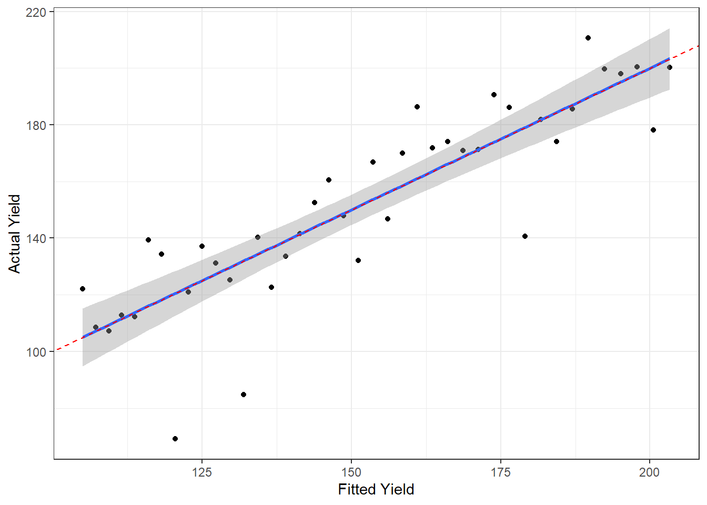
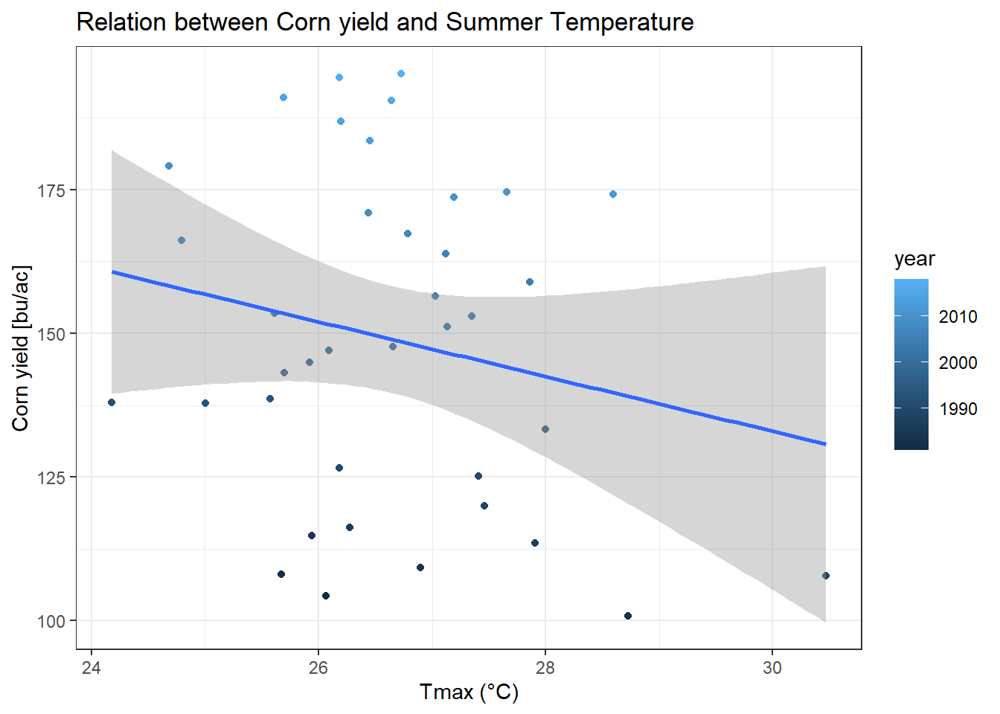
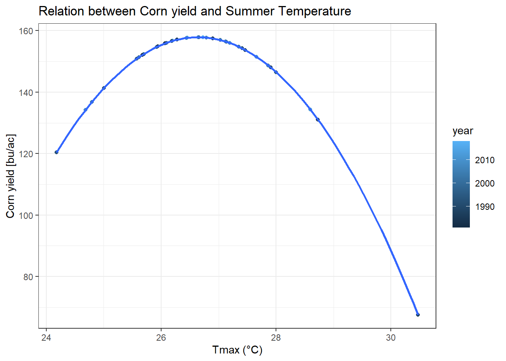
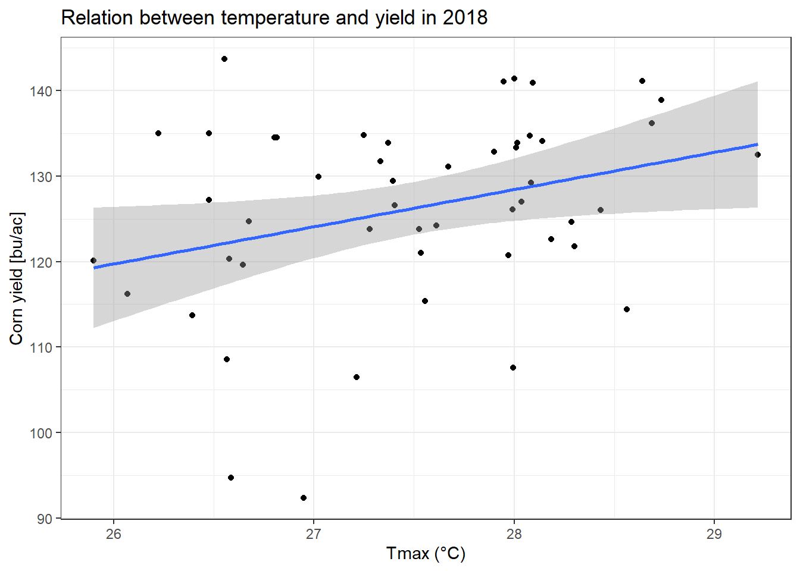
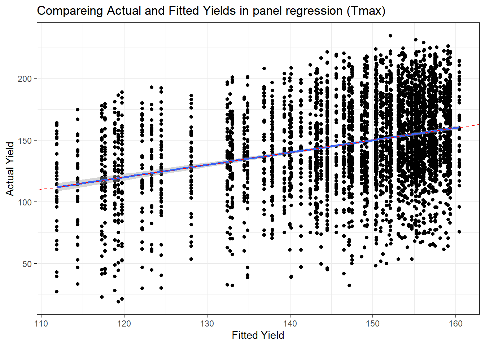
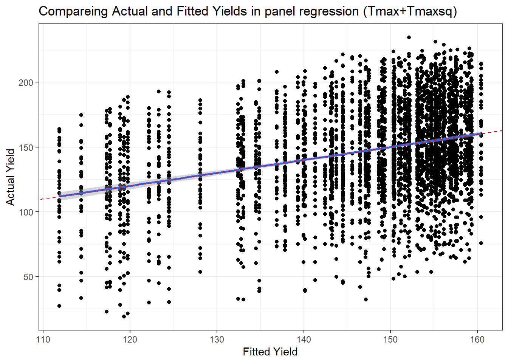
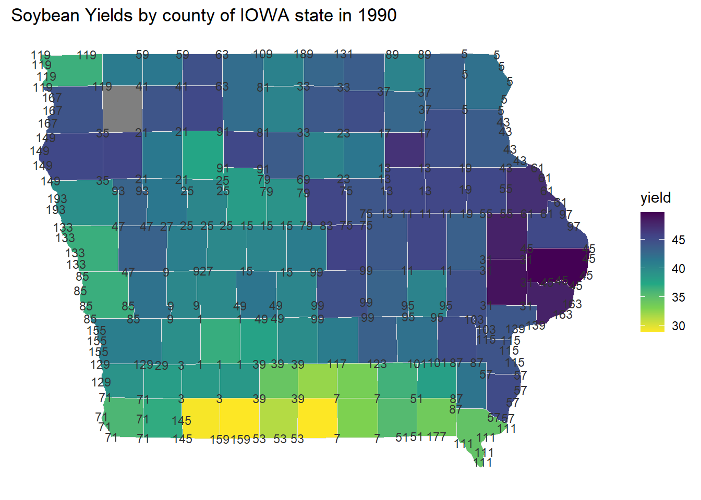

Chapter 7 Weather Data Analysis


7.2 Temperature trends


7.2.5 Question 1a: Extract Winneshiek County corn yields, fit a linear time trend, make a plot. Is there a significant time trend?
A: As seen the graph below, we can say the trend of corn yield in Winneshiek County has been increasing over time.
winncorn <- cornyields %>%
filter(county_ansi == 191)
ggplot(winncorn, mapping = aes(x= year, y= yield)) +
geom_point() +
theme_bw() +
labs(x='Year', y='Corn yield [bu/ac]') +
geom_smooth(method = lm , color='red')
7.2.6 Question 1b: Fit a quadratic time trend (i.e., year + year^2) and make a plot. Is there evidence for slowing yield growth?
A: The plot line (blue) with quadratic time trend applied is seemed to have no evidence for slowing yield growth. Instead it shows a similar trend to the previous actual yield graph because the regression plot line is same with reference line(red).
winncorn$yearsq <- (winncorn$year)^2
lm_winncornquad <- lm(yield ~ year + yearsq, winncorn)
summary(lm_winncornquad)##
## Call:
## lm(formula = yield ~ year + yearsq, data = winncorn)
##
## Residuals:
## Min 1Q Median 3Q Max
## -51.384 -3.115 1.388 9.743 25.324
##
## Coefficients:
## Estimate Std. Error t value Pr(>|t|)
## (Intercept) 2.583e+04 8.580e+04 0.301 0.765
## year -2.812e+01 8.576e+01 -0.328 0.745
## yearsq 7.641e-03 2.143e-02 0.357 0.723
##
## Residual standard error: 17.17 on 38 degrees of freedom
## Multiple R-squared: 0.7559, Adjusted R-squared: 0.7431
## F-statistic: 58.84 on 2 and 38 DF, p-value: 2.311e-12winncorn$fitted <- lm_winncornquad$fitted.values
ggplot(winncorn, mapping = aes(x = fitted, y = yield)) +
geom_point() +
geom_smooth(method=lm) +
geom_abline(intercept = 0, slope = 1, color='red', lty='dashed') +
theme_bw() +
labs(x = "Fitted Yield", y = "Actual Yield")
7.2.7 Question 2 – Time Series: Let’s analyze the relationship between temperature and yields for the Winneshiek County time series. Use data on yield and summer avg Tmax. Is adding year or Tmax^2 to your model helpful? Make a plot and interpret the results.
A: The relationship between temperature and yield in the winneshiek time series shows a generally negative trend as shown in the figures below. In particular, linear regression models with “Tmax squared” as a predictor give a very distinct quadratic equation result. So we will be able to predict accurate corn yields using this model.
winncorn_tmax <- inner_join(winncorn, winnesummer, by= 'year') %>%
select(county_name, year, yield, meantmax)
# str(winncorn_tmax)
#1) Corn yield ~ Tmax
lm_winncorn_tmax <- lm(yield ~ meantmax, winncorn_tmax)
summary(lm_winncorn_tmax)##
## Call:
## lm(formula = yield ~ meantmax, data = winncorn_tmax)
##
## Residuals:
## Min 1Q Median 3Q Max
## -71.96 -19.85 -3.19 24.64 61.72
##
## Coefficients:
## Estimate Std. Error t value Pr(>|t|)
## (Intercept) 275.876 118.335 2.331 0.0255 *
## meantmax -4.763 4.438 -1.073 0.2902
## ---
## Signif. codes: 0 '***' 0.001 '**' 0.01 '*' 0.05 '.' 0.1 ' ' 1
##
## Residual standard error: 32.88 on 36 degrees of freedom
## Multiple R-squared: 0.03101, Adjusted R-squared: 0.004098
## F-statistic: 1.152 on 1 and 36 DF, p-value: 0.2902ggplot(winncorn_tmax, mapping = aes(x=meantmax, y=yield, color=year)) +
geom_point() +
theme_bw() +
labs(x='Tmax (°C)', y='Corn yield [bu/ac]') +
ggtitle("Relation between Corn yield and Summer Temperature") +
geom_smooth(method=lm)
#2) Add year prediction variable
lm_winncorn_tmax_year <- lm(yield ~ meantmax + year, winncorn_tmax)
summary(lm_winncorn_tmax_year)##
## Call:
## lm(formula = yield ~ meantmax + year, data = winncorn_tmax)
##
## Residuals:
## Min 1Q Median 3Q Max
## -53.071 -7.269 2.271 9.935 27.505
##
## Coefficients:
## Estimate Std. Error t value Pr(>|t|)
## (Intercept) -4791.774 513.812 -9.326 5.10e-11 ***
## meantmax -3.201 2.308 -1.387 0.174
## year 2.514 0.253 9.934 1.01e-11 ***
## ---
## Signif. codes: 0 '***' 0.001 '**' 0.01 '*' 0.05 '.' 0.1 ' ' 1
##
## Residual standard error: 17.06 on 35 degrees of freedom
## Multiple R-squared: 0.7463, Adjusted R-squared: 0.7318
## F-statistic: 51.48 on 2 and 35 DF, p-value: 3.761e-11winncorn_tmax$fitted_year <- lm_winncorn_tmax_year$fitted.values
ggplot(winncorn_tmax, mapping = aes(x=meantmax, y=fitted_year, color=year)) +
geom_point() +
theme_bw() +
labs(x='Tmax (°C)', y='Corn yield [bu/ac]') +
ggtitle("Relation between Corn yield and Summer Temperature") +
geom_smooth(method=lm)
#3) OR Add Tmax squared prediction variable
winncorn_tmax$tmaxsq <- (winncorn_tmax$meantmax)^2
lm_winncorn_tmaxsq <- lm(yield ~ meantmax + tmaxsq, winncorn_tmax)
summary(lm_winncorn_tmaxsq)##
## Call:
## lm(formula = yield ~ meantmax + tmaxsq, data = winncorn_tmax)
##
## Residuals:
## Min 1Q Median 3Q Max
## -56.587 -22.262 -0.982 22.409 52.798
##
## Coefficients:
## Estimate Std. Error t value Pr(>|t|)
## (Intercept) -4223.604 1446.639 -2.920 0.00609 **
## meantmax 328.918 107.068 3.072 0.00410 **
## tmaxsq -6.173 1.979 -3.119 0.00362 **
## ---
## Signif. codes: 0 '***' 0.001 '**' 0.01 '*' 0.05 '.' 0.1 ' ' 1
##
## Residual standard error: 29.5 on 35 degrees of freedom
## Multiple R-squared: 0.2417, Adjusted R-squared: 0.1984
## F-statistic: 5.579 on 2 and 35 DF, p-value: 0.007887winncorn_tmax$fitted_tmaxsq <- lm_winncorn_tmaxsq$fitted.values
ggplot(winncorn_tmax, mapping = aes(x=meantmax, y=fitted_tmaxsq, color=year)) +
geom_point() +
theme_bw() +
labs(x='Tmax (°C)', y='Corn yield [bu/ac]') +
ggtitle("Relation between Corn yield and Summer Temperature") +
geom_smooth(method=loess)
7.2.8 Question 3 – Cross-Section: Analyze the relationship between temperature and yield across all counties in 2018. Is there a relationship? Interpret the results.
A: Based on the result of regression analysis, the p-value is less than alpha(=0.05), so we can determine that there is a relationship between temperature and yield, and the relationship is positive trend as you can see the below figure.
#Extract temperature data across all counties in 1981
tmaxdf_1981 <- tmaxdf %>%
filter(year==1981 & day >= 152 & day <=243 & !is.na(tmax)) %>%
group_by(countyfp) %>%
summarise(meantmax = mean(tmax))
tmaxdf_1981$countyfp <- as.numeric(tmaxdf_1981$countyfp)
#Extract yield data across all counties in 1981, and Change column name to join two dataset
cornyields_1981 <- cornyields %>%
filter(year==1981, !is.na(yield))
colnames(cornyields_1981)[1] <- "countyfp"
#Join two dataset
Tmax_yield_all <- inner_join(tmaxdf_1981, cornyields_1981, by="countyfp")
ggplot(Tmax_yield_all, mapping = aes(x=meantmax, y=yield)) +
geom_point() +
theme_bw() +
labs(x='Tmax (°C)', y='Corn yield [bu/ac]', title='Relation between temperature and yield in 2018')+
geom_smooth(method=lm)
#Analyze regression
LMFit <- lm(yield ~ meantmax, data=Tmax_yield_all)
summary(LMFit)##
## Call:
## lm(formula = yield ~ meantmax, data = Tmax_yield_all)
##
## Residuals:
## Min 1Q Median 3Q Max
## -31.4448 -4.8675 0.7887 6.1170 21.5695
##
## Coefficients:
## Estimate Std. Error t value Pr(>|t|)
## (Intercept) 6.670 53.799 0.124 0.9018
## meantmax 4.348 1.955 2.224 0.0309 *
## ---
## Signif. codes: 0 '***' 0.001 '**' 0.01 '*' 0.05 '.' 0.1 ' ' 1
##
## Residual standard error: 10.83 on 48 degrees of freedom
## Multiple R-squared: 0.09341, Adjusted R-squared: 0.07452
## F-statistic: 4.946 on 1 and 48 DF, p-value: 0.03097.2.9 Question 4 – Panel: One way to leverage multiple time series is to group all data into what is called a “panel” regression. Convert the county ID code (“countyfp” or “county_ansi”) into factor using as.factor, then include this variable in a regression using all counties’ yield and summer temperature data. How does the significance of your temperature coefficients (Tmax, Tmax^2) change? Make a plot comparing actual and fitted yields and interpret the results of your model.
A: The result of comparing actual and fitted yields is almost same to reference line(red, y=x). So to say, we would probably able to infer predicted corn yield close to actual yields through this panel regression model. And there is no significant difference in the result due to temperature coefficients change(Tmax, Tmaxsq).
#Extract temperature data across all counties
tmaxdf_years <- tmaxdf %>%
filter(day >= 152 & day <=243 & !is.na(tmax)) %>%
group_by(countyfp) %>%
summarise(meantmax = mean(tmax))
#Extract yield data across all counties, and Change column name to join two dataset
cornyields_years <- cornyields %>%
filter(!is.na(yield))
colnames(cornyields_years)[1] <- "countyfp"
cornyields_years$countyfp <- as.factor(cornyields_years$countyfp)
#Join two dataset
Tmax_yield_all_years <- inner_join(tmaxdf_years, cornyields_years, by="countyfp")
#Regression analysis and plot -Tmax
LMFit2 <- lm(yield ~ meantmax + countyfp, data=Tmax_yield_all_years)
#summary(LMFit2)
Tmax_yield_all_years$fitted <- LMFit2$fitted.values
ggplot(Tmax_yield_all_years, mapping = aes(x=fitted, y=yield)) +
geom_point() +
geom_smooth (method = lm) +
geom_abline(intercept = 0, slope = 1, color='red', lty='dashed') +
theme_bw() +
labs(x='Fitted Yield', y='Actual Yield',
title='Compareing Actual and Fitted Yields in panel regression (Tmax)')
#Regression analysis and plot -Tmax squared
Tmax_yield_all_years$tmaxsq <- (Tmax_yield_all_years$meantmax)^2
LMFit3 <- lm(yield ~ meantmax + tmaxsq + countyfp , data=Tmax_yield_all_years)
#summary(LMFit3)
Tmax_yield_all_years$fitted2 <- LMFit3$fitted.values
ggplot(Tmax_yield_all_years, mapping = aes(x=fitted2, y=yield)) +
geom_point() +
geom_smooth(method = lm) +
geom_abline (intercept = 0, slope = 1, col='red', lty='dashed') +
theme_bw() +
labs(x='Fitted Yield', y='Actual Yield',
title='Compareing Actual and Fitted Yields in panel regression (Tmax+Tmaxsq)')
7.2.10 Question 5 – Soybeans: Download NASS data on soybean yields and explore either a time series relationship for a given county, the cross-sectional relationship for a given year, or a panel across all counties and years.
A: We can find the correlation under various conditions through the below figures.
#Parameters to query on for soybean data
params2 <- list(commodity_desc = "SOYBEANs", statisticcat_desc="YIELD",
prodn_practice_desc = "ALL PRODUCTION PRACTICES", year__GE = 1981, state_alpha = "IA")
params <- list(commodity_desc = "CORN", util_practice_desc = "GRAIN", prodn_practice_desc = "ALL PRODUCTION PRACTICES", year__GE = 1981, state_alpha = "IA")
#Download
soybeansyieldsall <- nassqs_yields(params2)#Tidying up the data
soybeansyieldsall$county_ansi <- as.numeric(soybeansyieldsall$county_ansi)
soybeansyieldsall$yield <- as.numeric(soybeansyieldsall$Value)
soybean_yields <- select(soybeansyieldsall, county_ansi, county_name, yield, year) %>%
filter(!is.na(county_ansi) & !is.na(yield))
soybean_yields <- tibble(soybean_yields)
#A time series relationship for a given county(winneshiek)
winnsoybean <- soybean_yields %>%
filter(county_ansi==191)
ggplot(winnsoybean, mapping=aes(x=year, y=yield)) +
geom_point() +
theme_bw() +
labs(x="Year", y="Soybeans Yield [bu/ac]", title="Soybean Yields in Winneshiek County by year") +
geom_smooth(method = lm)
#The cross-sectional relationship for a given year(1990)
soybeans_1990 <- soybean_yields %>%
filter(year==1990)
ggplot(soybeans_1990, mapping=aes(x=county_ansi, y=yield), color=county_ansi) +
geom_point() +
theme_bw() +
labs(x="County ANSI", y="Soybeans Yield [bu/ac]",
title="Soybean Yield by county across Iowa state in 1990") +
geom_smooth(method = lm)
#Panel across all counties and years
LMFit4 <- lm(yield ~ year + as.factor(county_ansi), data=soybean_yields)
#summary(LMFit4)
soybean_yields$fitted <- LMFit4$fitted.values
ggplot(soybean_yields, mapping = aes(x=fitted, y=yield)) +
geom_point() +
geom_smooth(method = lm) +
geom_abline (intercept = 0, slope = 1, col='red', lty='dashed') +
theme_bw() +
labs(x='Fitted Yield [bu/ac]', y='Actual Yield [bu/ac]',
title='Compareing Actual and Fitted Soybean Yields in winneshiek County')
7.2.11 Bonus: Find a package to make a county map of Iowa displaying some sort of information about yields or weather. Interpret your map.
A: I used the “tidyverse” package to plot 1990 soybean yields on a map of counties in Iowa. As you can see, the southern regions of the state show low yields, while the eastern regions, such as Cedar, Clinton, and Jones counties, inferred through the “county_ansi” code, show high yields.
us_counties <- map_data("county")
Iowa_counties <- us_counties %>%
filter(region=='iowa')
# head(soybeans_1990)
# head(Iowa_counties)
soybeans_1990$county_name <- tolower(soybeans_1990$county_name)
soybeans_1990_Iowa <- Iowa_counties %>%
left_join(soybeans_1990, by=c("subregion"="county_name"))
# head(soybeans_1990_Iowa)
#ggplot map
ggplot(soybeans_1990_Iowa) +
geom_polygon(mapping = aes(x=long, y=lat, group=group, fill=yield),
color="gray90", size=0.1) +
scale_fill_continuous(type = 'viridis', direction=-1) +
geom_text(aes(x=long, y=lat, label=county_ansi),
color="gray20", check_overlap = T, size=3) +
theme(legend.position = 'right',
axis.line = element_blank(),
axis.text = element_blank(),
axis.title = element_blank(),
axis.ticks = element_blank(),
panel.background = element_blank(),
panel.border = element_blank(),
panel.grid = element_blank()) +
ggtitle("Soybean Yields by county of IOWA state in 1990" )## Warning: Removed 5 rows containing missing values (geom_text).
7.2.12 Bonus #2: Challenge question - map trends in corn yields by county across Iowa. Interpret your map.
A: Several five-year cycle maps were obtained of corn yields by county across Iowa, as shown below. Data for some counties have been omitted, but overall, we can see a trend toward higher yields across the state over time.
cornyields$county_name <- tolower(cornyields$county_name)
#head(cornyields)
cornyields_Iowa <- Iowa_counties %>%
left_join(cornyields, by=c("subregion"="county_name"))
ggplot(data=subset(cornyields_Iowa, year %in% c(1981, 1985, 1990, 1995, 2000, 2005, 2010, 2015, 2020)),
mapping = aes(x=long, y=lat, group=group, fill=yield)) +
geom_polygon(color="gray90", size=0.1) +
scale_fill_continuous(type='viridis', direction=-1 ) +
theme(legend.position = 'right',
axis.line = element_blank(),
axis.text = element_blank(),
axis.title = element_blank(),
axis.ticks = element_blank(),
panel.background = element_blank(),
panel.border = element_blank(),
panel.grid = element_blank()) +
labs(title="Corn Yields Trend in IOWA, 1981-2020",
fill="corn yields [bu/ac]") +
facet_wrap(~year, ncol = 3)